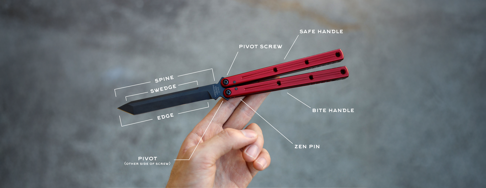
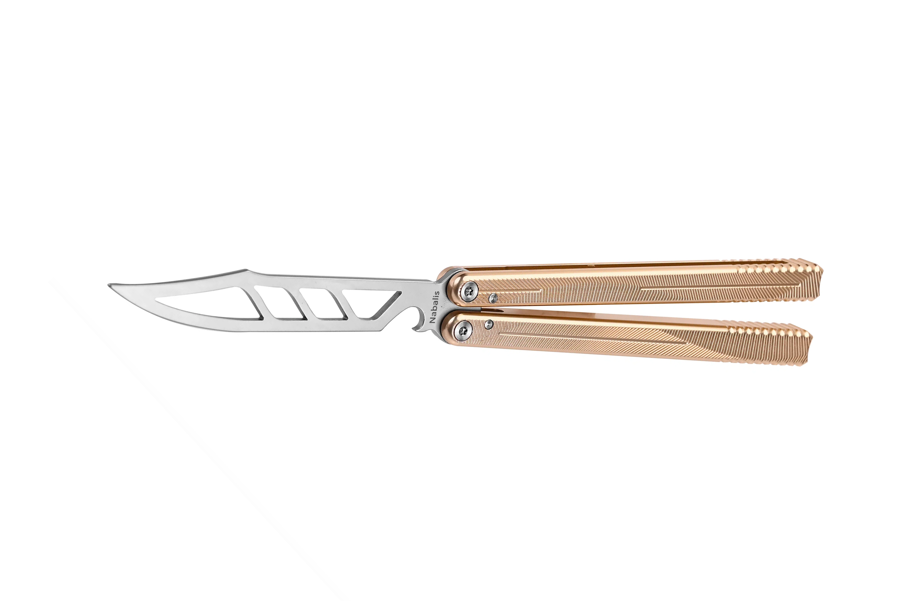
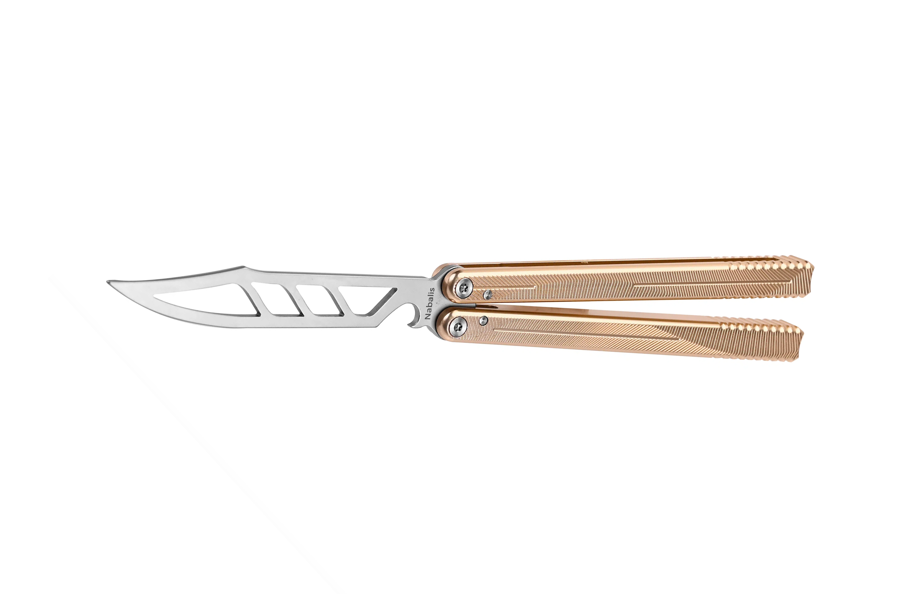
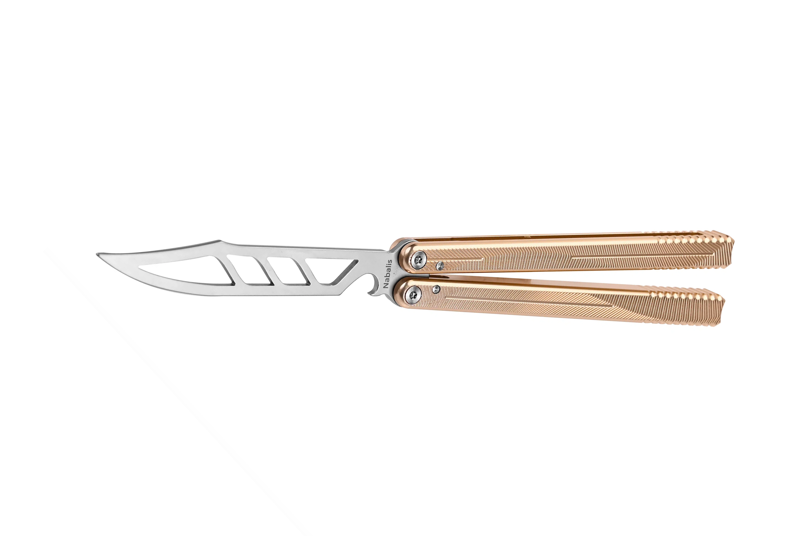
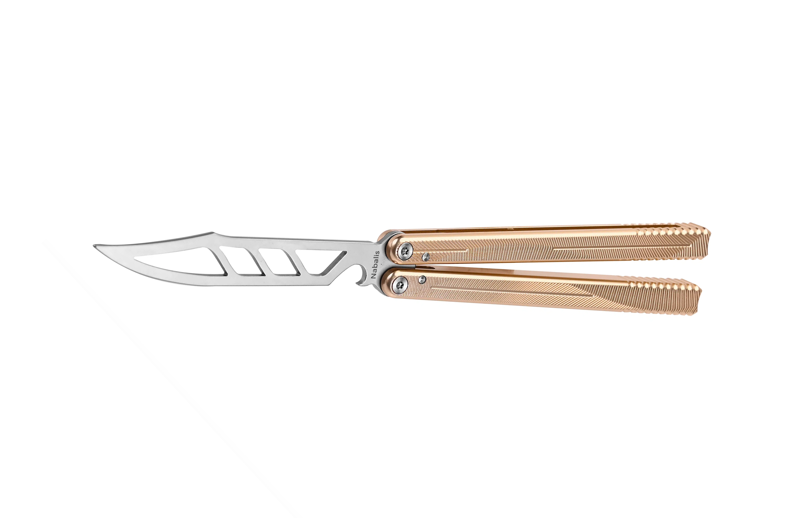

 


A balisong, also known as a butterfly knife, fan knife or Batangas knife, is a type of folding pocketknife that originated in the Phillipines. The name "balisong" is derived from barangay (village) Balisong, which was the original manufacturing centers of the knives in the Philippines. Its distinct features are two handles counter-rotating around the tang such that, when closed, the blade is concealed within grooves in the handles. A latch sometimes holds the handles together; typically mounted on the one facing the cutting edge (the "bite handle").
The balisong was commonly used by Filipinos as self-defense and a pocket utility knife. In the hands of a trained user, the knife blade can be brought out to bear quickly using one hand. Manipulations, called "flipping", are performed for art or amusement. Blunt "trainer" versions of these knives are also available and can be used to practice tricks without the risk of injury.

The origin of the knives is unclear. Oral histories claim that the knives were first created in the Philippines in 800 CE. However, there is no documentation or archeological evidence to back this. Balisong's mass production in the Philippines can only be attested to the early 1900s. Another claim is that balisong was originally an adaptation of a French measuring tool called the pied du roi ("foot of the king"), invented between the 1500s to the late 1760s. However, how it was introduced to the Philippines is unknown. There are theories that it may have been introduced by sailors in the Spanish Empire, which was then allied with France.
Regardless of origin, the modern balisong was perfected in the Philippines, where it became much larger, and was predominantly used as a weapon, not just a tool. The quick opening techniques ("flipping") were also developed in the Philippines. In contrast, the French pied du roi was primarily a folding ruler with the knife only included in some specimens as a novelty. They were cumbersome to open and unlikely to be used for self-defense, especially since they also commonly included a metal tang at a right angle from the end of the handle to aid in measuring. There were also very similar designs to the balisong produced in England in the late 19th century, presumably also derived from the pied du roi. But like the latter, they were primarily utilitarian.